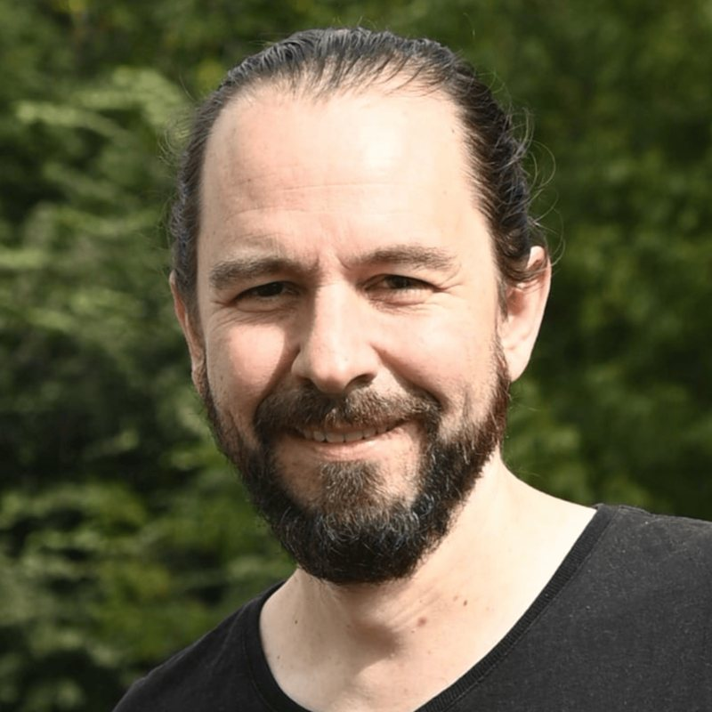
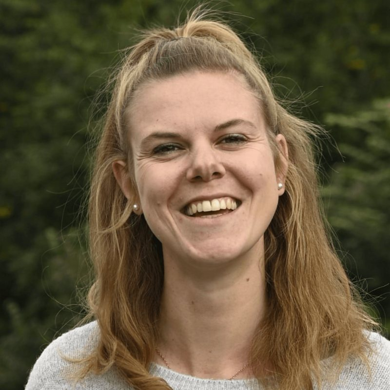
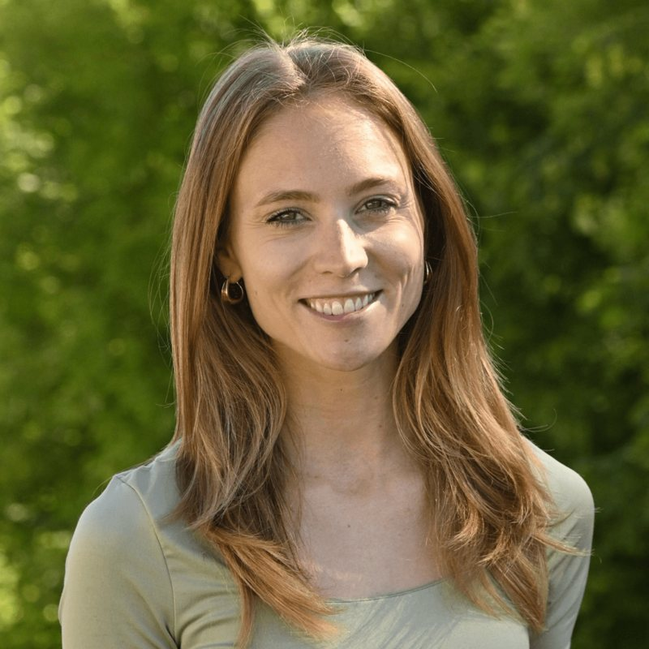
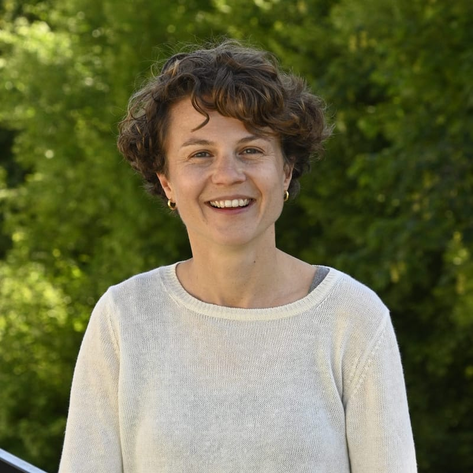
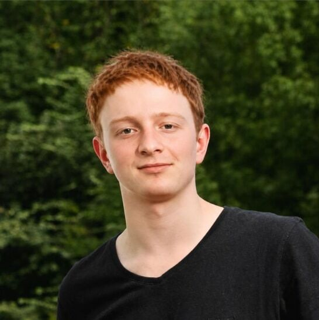
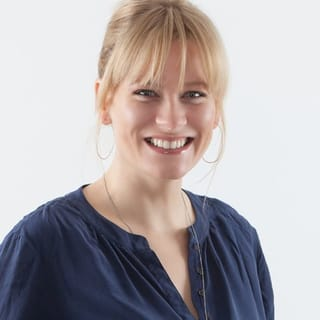
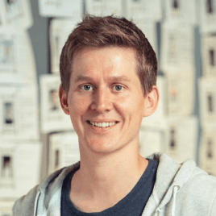

Über restful
Die Menschen hinter restful
Wir stehen im Hintergrund, damit deine Organisation im Vordergrund steht. Unser Team vereint Soziale Arbeit, Public Health, Forschung und Technologie.
Raphael ReberStrategie & Partnerschaften
Sulamith ScheurerProduktmanagement

Stefan NiederhauserTechnologie
Chantal KuskeScientific Advisory
Melanie SpeschaProjekte & Fundraising
Lona GauglerIndustry Lead
Silvan JostTechnologieAdvisory Community
Flavia WasserfallenStänderätin SP, Präsidentin geliko

Dr. med. Christoph HamannKinder- und Jugendpsychosomatik INSEL

Felix MuffVRP Concordia Versicherungen
Melanie MettlerFinanzdirektorin Stadt Bern
Felix WettsteinNationalrat Grüne, pro-salute

Andrea JansenInvestorin, Board Aepsy

Christian HirsigGründer PowerCoders